The three dimensional shape or configuration of a molecule is an important characteristic. This shape is dependent on the preferred spatial orientation of covalent bonds to atoms having two or more bonding partners. Three dimensional configurations are best viewed with the aid of models.
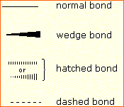
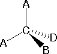
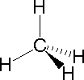
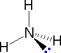
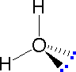
Bonding configurations are readily predicted by valence-shell electron-pair repulsion theory, commonly referred to as VSEPR in most introductory chemistry texts. This simple model is based on the fact that electrons repel each other, and that it is reasonable to expect that the bonds and non-bonding valence electron pairs associated with a given atom will prefer to be as far apart as possible. The bonding configurations of carbon are easy to remember, since there are only three categories.
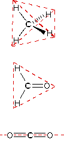
In the three examples shown above, the central atom (carbon) does not have any non-bonding valence electrons; consequently the configuration may be estimated from the number of bonding partners alone. For molecules of water and ammonia, however, the non-bonding electrons must be included in the calculation. In each case there are four regions of electron density associated with the valence shell so that a tetrahedral bond angle is expected. The measured bond angles of these compounds (H2O 104.5º & NH3 107.3º) show that they are closer to being tetrahedral than trigonal or linear. Of course, it is the configuration of atoms (not electrons) that defines the the shape of a molecule, and in this sense ammonia is said to be pyramidal (not tetrahedral). The compound boron trifluoride, BF3, does not have non-bonding valence electrons and the configuration of its atoms is trigonal. Nice treatments of VSEPR theory have been provided by Oxford and Purdue . Click on the university name to visit their site.
The best way to study the three-dimensional shapes of molecules is by using molecular models. Many kinds of model kits are available to students and professional chemists. Some of the useful features of physical models can be approximated by the model viewing applet Jmol. This powerful visualization tool allows the user to move a molecular stucture in any way desired. Atom distances and angles are easily determined. To measure a distance, double-click on two atoms. To measure a bond angle, do a double-click, single-click, double-click on three atoms. To measure a torsion angle, do a double-click, single-click, single-click, double-click on four atoms. A pop-up menu of commands may be accessed by the right button on a PC or a control-click on a Mac while the cursor is inside the display frame.You may examine several Jmol models of compounds discussed above by .
One way in which the shapes of molecules manifest themselves experimentally is through molecular dipole moments. A molecule which has one or more polar covalent bonds may have a dipole moment as a result of the accumulated bond dipoles. In the case of water, we know that the O-H covalent bond is polar, due to the different electronegativities of hydrogen and oxygen. Since there are two O-H bonds in water, their bond dipoles will interact and may result in a molecular dipole which can be measured. The following diagram shows four possible orientations of the O-H bonds.
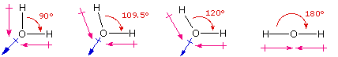
The bond dipoles are colored magenta and the resulting molecular dipole is colored blue. In the linear configuration (bond angle 180º) the bond dipoles cancel, and the molecular dipole is zero. For other bond angles (120 to 90º) the molecular dipole would vary in size, being largest for the 90º configuration. In a similar manner the configurations of methane (CH4) and carbon dioxide (CO2) may be deduced from their zero molecular dipole moments. Since the bond dipoles have canceled, the configurations of these molecules must be tetrahedral (or square-planar) and linear respectively. The case of methane provides insight to other arguments that have been used to confirm its tetrahedral configuration. For purposes of discussion we shall consider three other configurations for CH4, square-planar, square-pyramidal and triangular-pyramidal. Models of these possibilities may be examined by .
Substitution of one hydrogen by a chlorine atom gives a CH3Cl compound. Since the tetrahedral, square-planar and square-pyramidal configurations have structurally equivalent hydrogen atoms, they would each give a single substitution product. However, in the trigonal-pyramidal configuration one hydrogen (the apex) is structurally different from the other three (the pyramid base). Substitution in this case should give two different CH3Cl compounds if all the hydrogens react. In the case of disubstitution, the tetrahedral configuration of methane would lead to a single CH2Cl2 product, but the other configurations would give two different CH2Cl2 compounds. These substitution possibilities are shown in the above insert.
Structural Formulas It is necessary to draw structural formulas for organic compounds because in most cases a molecular formula does not uniquely represent a single compound. Different compounds having the same molecular formula are called isomers, and the prevalence of organic isomers reflects the extraordinary versatility of carbon in forming strong bonds to itself and to other elements. When the group of atoms that make up the molecules of different isomers are bonded together in fundamentally different ways, we refer to such compounds as constitutional isomers. There are seven constitutional isomers of C4H10O, and structural formulas for these are drawn in the following table. These formulas represent all known and possible C4H10O compounds, and display a common structural feature. There are no double or triple bonds and no rings in any of these structures.. Note that each of the carbon atoms is bonded to four other atoms, and is saturated with bonding partners.
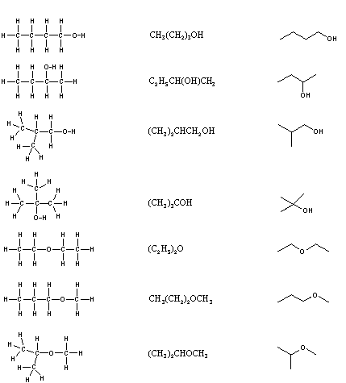
Simplification of structural formulas may be achieved without any loss of the information they convey. In condensed structural formulas the bonds to each carbon are omitted, but each distinct structural unit (group) is written with subscript numbers designating multiple substituents, including the hydrogens. Shorthand (line) formulas omit the symbols for carbon and hydrogen entirely. Each straight line segment represents a bond, the ends and intersections of the lines are carbon atoms, and the correct number of hydrogens is calculated from the tetravalency of carbon. Non-bonding valence shell electrons are omitted in these formulas. Developing the ability to visualize a three-dimensional structure from two-dimensional formulas requires practice, and in most cases the aid of molecular models. As noted earlier, many kinds of model kits are available to students and professional chemists, and the beginning student is encouraged to obtain one.
Constitutional isomers have the same molecular formula, but their physical and chemical properties may be very different. For an example Click Here.
Distinguishing Carbon Atoms When discussing structural formulas, it is often useful to distinguish different groups of carbon atoms by their structural characteristics. A primary carbon (1º) is one that is bonded to no more than one other carbon atom. A secondary carbon (2º) is bonded to two other carbon atoms, and tertiary (3º) and quaternary (4º) carbon atoms are bonded respectively to three and four other carbons. The three C5H12 isomers shown below illustrate these terms.
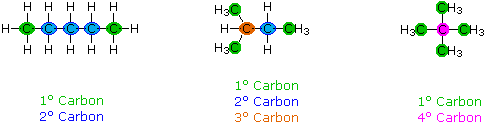
Structural differences may occur within these four groups, depending on the molecular constitution. In the formula on the right all four 1º-carbons are structurally equivalent (remember the tetrahedral configuration of tetravalent carbon); however the central formula has two equivalent 1º-carbons (bonded to the 3º carbon on the left end) and a single, structurally different 1º-carbon (bonded to the 2º-carbon) at the right end. Similarly, the left-most formula has two structurally equivalent 2º-carbons (next to the ends of the chain), and a structurally different 2º-carbon in the middle of the chain. A consideration of molecular symmetry helps to distinguish structurally equivalent from nonequivalent atoms and groups. The ability to distinguish structural differences of this kind is an essential part of mastering organic chemistry. It will come with practice and experience.
Our ability to draw structural formulas for molecules is remarkable. To see how this is done Click Here.
Although structural formulas are essential to the unique description of organic compounds, it is interesting and instructive to evaluate the information that may be obtained from a molecular formula alone. Three useful rules may be listed:
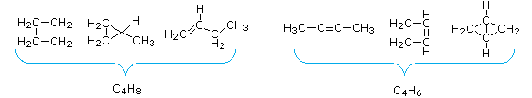
From the above discussion and examples it should be clear that the molecular formula of a hydrocarbon (CnHm) provides information about the number of rings and/or double bonds that must be present in its structural formula. By rule #2 m must be an even number, so if m < (2n + 2) the difference is also an even number that reflects any rings and double bonds. A triple bond is counted as two double bonds.
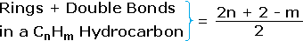
The presence of one or more nitrogen atoms or halogen substituents requires a modified analysis. The above formula may be extended to such compounds by a few simple principles:
Kekulé structural formulas are essential tools for understanding organic chemistry. However, the structures of some compounds and ions cannot be represented by a single formula. For example, sulfur dioxide (SO2) and nitric acid (HNO3) may each be described by two equivalent formulas (equations 1 & 2). For clarity the two ambiguous bonds to oxygen are given different colors in these formulas.
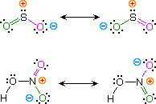
If only one formula for sulfur dioxide was correct and accurate, then the double bond to oxygen would be shorter and stronger than the single bond. Since experimental evidence indicates that this molecule is bent (bond angle 120º) and has equal length sulfur : oxygen bonds (1.432 Å), a single formula is inadequate, and the actual structure resembles an average of the two formulas. This averaging of electron distribution over two or more hypothetical contributing structures (canonical forms) to produce a hybrid electronic structure is called resonance. Likewise, the structure of nitric acid is best described as a resonance hybrid of two structures, the double headed arrow being the unique symbol for resonance.
The above examples represent one extreme in the application of resonance. Here, two structurally and energetically equivalent electronic structures for a stable compound can be written, but no single structure provides an accurate or even an adequate representation of the true molecule. In cases such as these, the electron delocalization described by resonance enhances the stability of the molecules, and compounds or ions composed of such molecules often show exceptional stability.
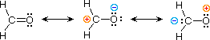
The electronic structures of most covalent compounds do not suffer the inadequacy noted above. Thus, completely satisfactory Kekulé formulas may be drawn for water (H2O), methane (CH4) and acetylene C2H2). Nevertheless, the principles of resonance are very useful in rationalizing the chemical behavior of many such compounds. For example, the carbonyl group of formaldehyde (the carbon-oxygen double bond) reacts readily to give addition products. The course of these reactions can be explained by a small contribution of a dipolar resonance contributor, as shown in equation 3. Here, the first contributor (on the left) is clearly the best representation of this molecular unit, since there is no charge separation and both the carbon and oxygen atoms have achieved valence shell neon-like configurations by covalent electron sharing. If the double bond is broken heterolytically, formal charge pairs result, as shown in the other two structures. The preferred charge distribution will have the positive charge on the less electronegative atom (carbon) and the negative charge on the more electronegative atom (oxygen). Therefore the middle formula represents a more reasonable and stable structure than the one on the right. The application of resonance to this case requires a weighted averaging of these canonical structures. The double bonded structure is regarded as the major contributor, the middle structure a minor contributor and the right hand structure a non-contributor. Since the middle, charge-separated contributor has an electron deficient carbon atom, this explains the tendency of electron donors (nucleophiles) to bond at this site.
The basic principles of the resonance method may now be summarized. For a given compound, a set of Lewis / Kekulé structures are written, keeping the relative positions of all the component atoms the same. These are the canonical forms to be considered, and all must have the same number of paired and unpaired electrons. The following factors are important in evaluating the contribution each of these canonical structures makes to the actual molecule.
The stability of a resonance hybrid is always greater than the stability of any canonical contributor. Consequently, if one canonical form has a much greater stability than all others, the hybrid will closely resemble it electronically and energetically. This is the case for the carbonyl group (eq.3). The left hand C=O structure has much greater total bonding than either charge-separated structure, so it describes this functional group rather well. On the other hand, if two or more canonical forms have identical low energy structures, the resonance hybrid will have exceptional stabilization and unique properties. This is the case for sulfur dioxide (eq.1) and nitric acid (eq.2).
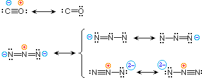
To illustrate these principles we shall consider carbon monoxide (eq.4) and azide anion (eq.5). In each case the most stable canonical form is on the left. For carbon monoxide, the additional bonding is more important than charge separation. Furthermore, the double bonded structure has an electron deficient carbon atom (valence shell sextet). A similar destabilizing factor is present in the two azide canonical forms on the top row of the bracket (three bonds vs. four bonds in the left most structure). The bottom row pair of structures have four bonds, but are destabilized by the high charge density on a single nitrogen atom.
All the examples on this page demonstrate an important restriction that must be remembered when using resonance. No atoms change their positions within the common structural framework. Only electrons are moved.
A more detailed model of covalent bonding requires a consideration of valence shell atomic orbitals. For second period elements such as carbon, nitrogen and oxygen, these orbitals have been designated 2s, 2px, 2py & 2pz. The spatial distribution of electrons occupying each of these orbitals is shown in the diagram below. Very nice displays of orbitals may be found at the following sites: J. Gutow, Univ. Wisconsin Oshkosh R. Spinney, Ohio State M. Winter, Sheffield University
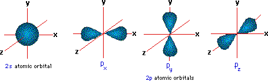
The valence shell electron configuration of carbon is 2s2, 2px1, 2py1 & 2pz0. If this were the configuration used in covalent bonding, carbon would only be able to form two bonds. In this case, the valence shell would have six electrons- two shy of an octet. However, the tetrahedral structures of methane and carbon tetrachloride demonstrate that carbon can form four equivalent bonds, leading to the desired octet. In order to explain this covalent bonding, Linus Pauling proposed an orbital hybridization model in which all the valence shell electrons of carbon are reorganized.
Hybrid Orbitals In order to explain the structure of methane (CH4), the 2s and three 2p orbitals are converted to four equivalent hybrid atomic orbitals, each having 25% s and 75% p character, and designated sp3. These hybrid orbitals have a specific orientation, and the four are naturally oriented in a tetrahedral fashion. Thus, the four covalent bonds of methane consist of shared electron pairs with four hydrogen atoms in a tetrahedral configuration, as predicted by VSEPR theory.
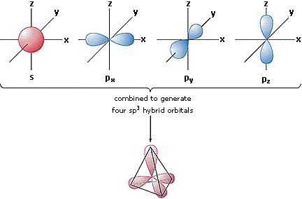
Molecular Orbitals Just as the valence electrons of atoms occupy atomic orbitals (AO), the shared electron pairs of covalently bonded atoms may be thought of as occupying molecular orbitals (MO). It is convenient to approximate molecular orbitals by combining or mixing two or more atomic orbitals. In general, this mixing of n atomic orbitals always generates n molecular orbitals. The hydrogen molecule provides a simple example of MO formation. In the following diagram, two 1s atomic orbitals combine to give a sigma (σ) bonding (low energy) molecular orbital and a second higher energy MO referred to as an antibonding orbital. The bonding MO is occupied by two electrons of opposite spin, the result being a covalent bond.
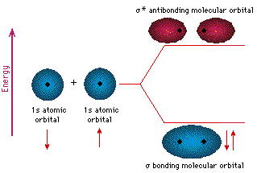
The notation used for molecular orbitals parallels that used for atomic orbitals. Thus, s-orbitals have a spherical symmetry surrounding a single nucleus, whereas σ-orbitals have a cylindrical symmetry and encompass two (or more) nuclei. In the case of bonds between second period elements, p-orbitals or hybrid atomic orbitals having p-orbital character are used to form molecular orbitals. For example, the sigma molecular orbital that serves to bond two fluorine atoms together is generated by the overlap of p-orbitals (part A below), and two sp3 hybrid orbitals of carbon may combine to give a similar sigma orbital. When these bonding orbitals are occupied by a pair of electrons, a covalent bond, the sigma bond results. Although we have ignored the remaining p-orbitals, their inclusion in a molecular orbital treatment does not lead to any additional bonding, as may be shown by activating the fluorine correlation diagram below.
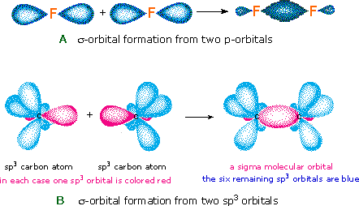
Another type of MO (the π orbital) may be formed from two p-orbitals by a lateral overlap, as shown in part A of the following diagram. Since bonds consisting of occupied π-orbitals (pi-bonds) are weaker than sigma bonds, pi-bonding between two atoms occurs only when a sigma bond has already been established. Thus, pi-bonding is generally found only as a component of double and triple covalent bonds. Since carbon atoms involved in double bonds have only three bonding partners, they require only three hybrid orbitals to contribute to three sigma bonds. A mixing of the 2s-orbital with two of the 2p orbitals gives three sp2 hybrid orbitals, leaving one of the p-orbitals unused. Two sp2 hybridized carbon atoms are then joined together by sigma and pi-bonds (a double bond), as shown in part B.
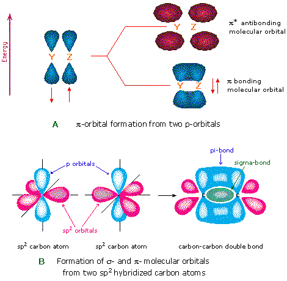
The manner in which atomic orbitals overlap to form molecular orbitals is actually more complex than the localized examples given above. These are useful models for explaining the structure and reactivity of many organic compounds, but modern molecular orbital theory involves the creation of an orbital correlation diagram. Two examples of such diagrams for the simple diatomic elements F2 and N2 will be drawn above when the appropriate button is clicked. The 1s and 2s atomic orbitals do not provide any overall bonding, since orbital overlap is minimal, and the resulting sigma bonding and antibonding components would cancel. In both these cases three 2p atomic orbitals combine to form a sigma and two pi-molecular orbitals, each as a bonding and antibonding pair. The overall bonding order depends on the number of antibonding orbitals that are occupied. The subtle change in the energy of the σ2p bonding orbital, relative to the two degenerate π-bonding orbitals, is due to s-p hybridization that is unimportant to the present discussion.
One example of the advantage offered by the molecular orbital approach to bonding is the oxygen molecule. Here, the correlation diagram correctly accounts for the paramagnetic character of this simple diatomic compound. Likewise, the orbital correlation diagram for methane provides another example of the difference in electron density predicted by molecular orbital calculations from that of the localized bond model. Click on the compound names for these displays.
A cartoon of the p and π orbitals of a double bond may be examined by .
A model of the π orbitals of ethene may be examined by .
The p-orbitals in these model are represented by red and blue colored spheres or ellipses, which represent different phases, defined by the mathematical wave equations for such orbitals.
Finally, in the case of carbon atoms with only two bonding partners only two hybrid orbitals are needed for the sigma bonds, and these sp hybrid orbitals are directed 180º from each other. Two p-orbitals remain unused on each sp hybridized atom, and these overlap to give two pi-bonds following the formation of a sigma bond (a triple bond), as shown below.
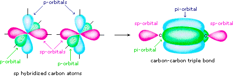
The various hybridization states of carbon may be examined by .
The following problems explore many of the concepts discussed above. They include recognition of different molecular shapes, obtaining structural information from molecular formulas, evaluation of line and condensed structural formulas, formal charges, hybridization and resonance.
This page is the property of The Edvibe Team. Comments, questions and errors should be sent to contact@edvibe.co.ke. These pages are provided to the IOCD to assist in capacity building in chemical education. 05/05/2013